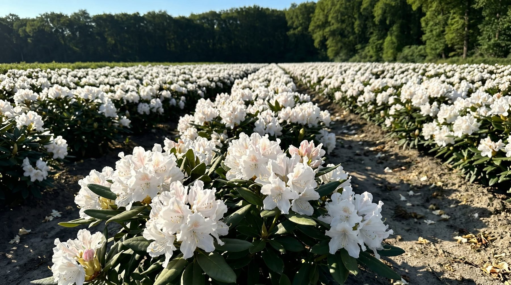
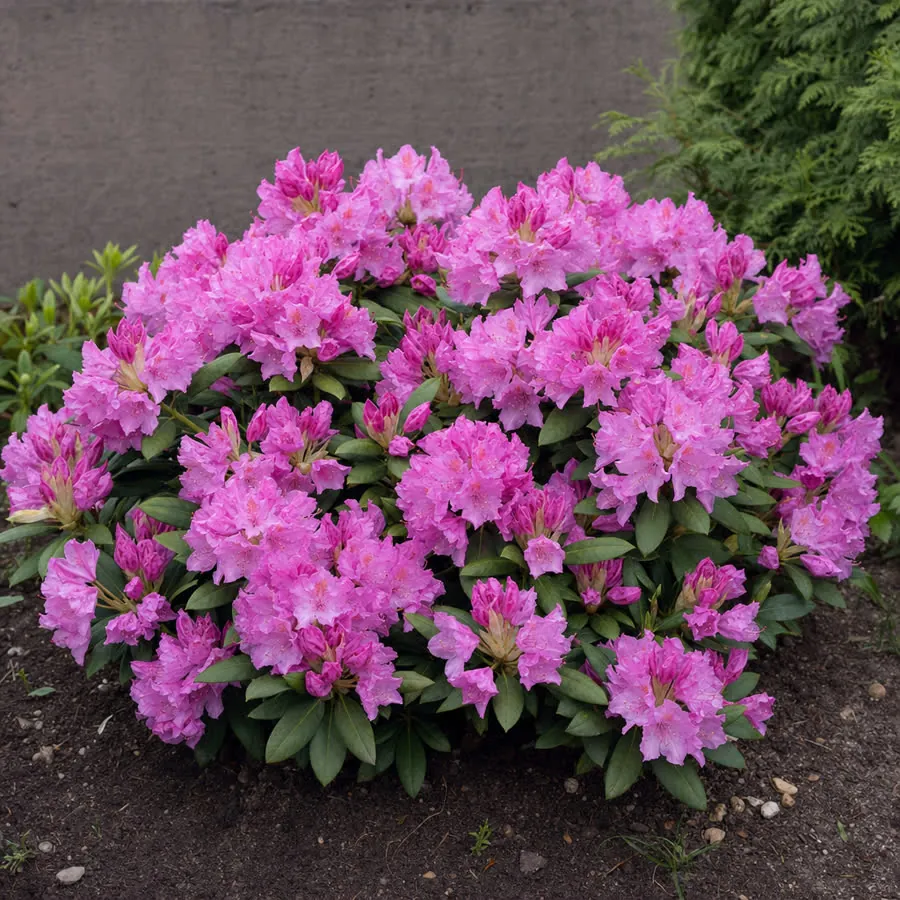
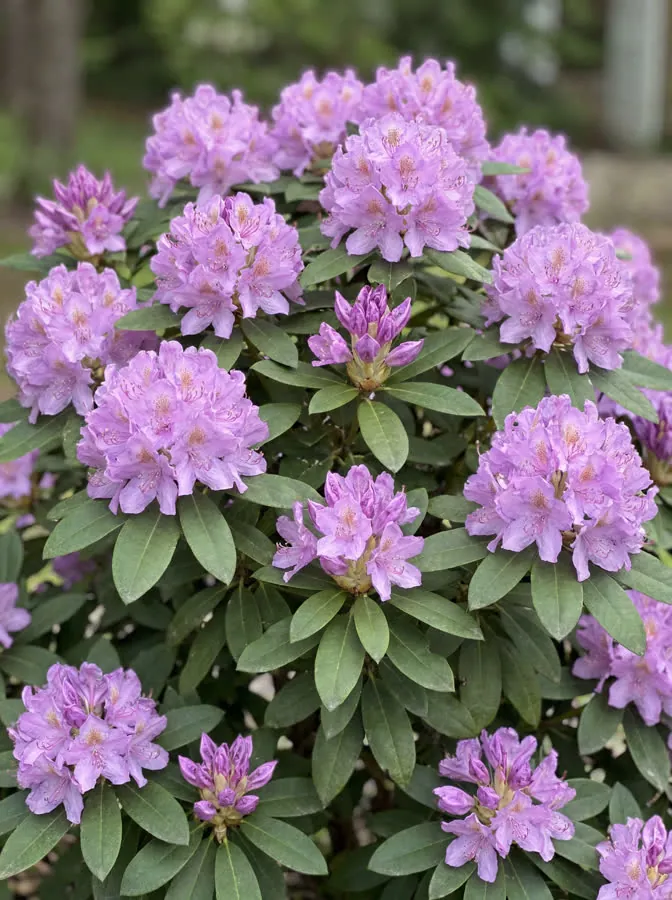
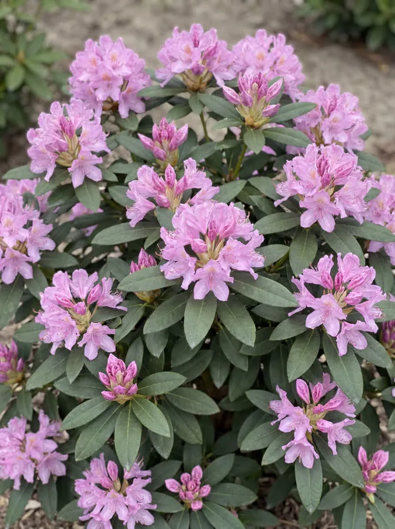
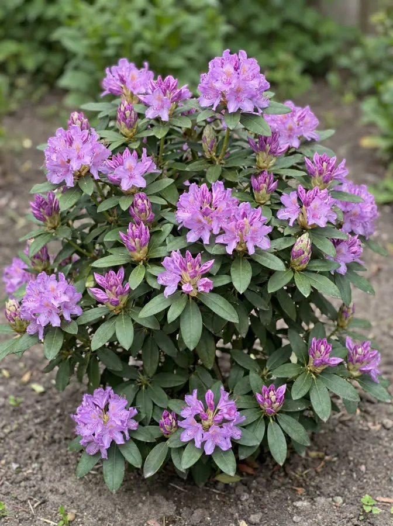
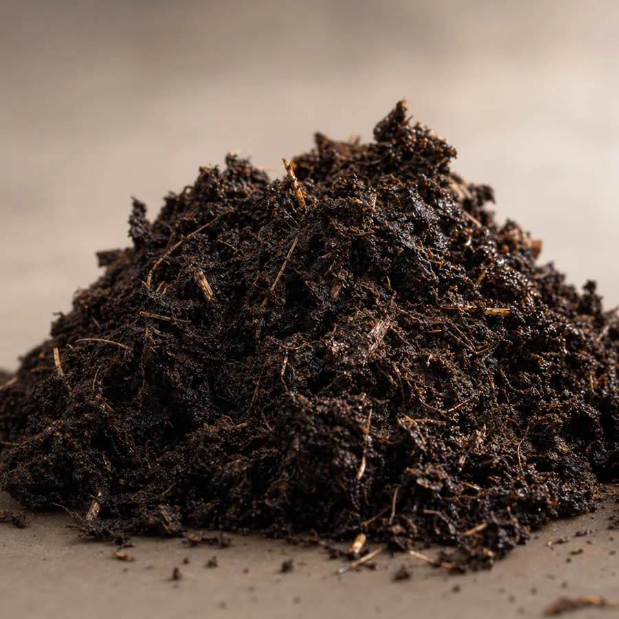

Wanneer planten
Het hele jaar door, behalve tijdens vorstperiodes. De ideale momenten zijn vroege lente (maart–april) en herfst (september–oktober). Plant u in de zomer, geef dan voldoende water in de eerste weken.

Familiekwekerij · Otterlo, Veluwe · sinds 2001
Gekweekt op veenrijke bodem, met een sterk wortelstelsel. Vers gerooid voor uw levering, bezorgd met eigen transport of af te halen in Otterlo.
De feiten
Onze beloften
„Een gezonde plant is geen toeval. Dat is onze standaard.” Gert Top, oprichter en kweker. Familiebedrijf in Otterlo, op de Veluwe: 10.000 planten op voorraad, direct van het veld naar uw tuin.
Onze planten groeien in de volle grond op veenrijke bodem en ontwikkelen daar een sterk wortelstelsel. Gerooid met kluit, direct van het veld naar uw tuin.
Niet aangeslagen in het eerste seizoen? Wij vervangen kosteloos.
Wij stemmen bezorging of afhaal af op uw planning en rooien uw planten pas vlak daarvoor.
U spreekt rechtstreeks met Gert, van vraag tot levering.
Geen minimumbestelling voor particulieren. Bel Gert voor advies over soort, maat en standplaats.

Dankzij onze veenrijke bodem en een uitgebalanceerde watergift ontwikkelen onze planten een sterk wortelstelsel. Daardoor passen ze zich moeiteloos aan in uw tuin, met aangroeigarantie.
Prijs per plant in 40–60 cm, ook leverbaar tot 120 cm. Bezorgd door heel Nederland of af te halen in Otterlo.


Wit / lichtroze
vanaf € 2540–60 cm

Warm roze
vanaf € 2740–60 cm

Paars-lavendel
vanaf € 2740–60 cm

Lila-roze / lavendel
vanaf € 2940–60 cm

Roze / lichtpaars
vanaf € 2240–60 cm

Violet-paars
vanaf € 2240–60 cm

Bij het planten
Zuurminnend, vochtregelend, voedingsrijk. Bevordert een sterk wortelstelsel.
€ 14,95per zak van 40 liter
Geen minimumbestelling. U kiest, wij rooien vers en bezorgen met eigen transport of zetten uw bestelling klaar in Otterlo.
Uw planten staan niet onnodig te wachten.
We rooien pas vlak voor uw bezorging of afhaal. Zo komt elke plant in optimale conditie aan.
Kies een van de zeven soorten en een maat van 40 tot 120 cm. Twijfelt u? Gert adviseert over soort, maat en standplaats.
Vanaf één plant. Na uw bestelling nemen wij contact op om een leveringsmoment af te stemmen dat u uitkomt.
Op het afgesproken moment rooien wij uw planten met kluit, direct van het veld.
Met eigen transport door heel Nederland, of af te halen in Otterlo: wij zetten uw bestelling klaar.
Geen minimumbestelling · afhalen in Otterlo mogelijk
De drie belangrijkste antwoorden uit onze plantgids. De volledige gids leest u op de plantgids-pagina.
Het hele jaar door, behalve tijdens vorstperiodes. De ideale momenten zijn vroege lente (maart–april) en herfst (september–oktober). Plant u in de zomer, geef dan voldoende water in de eerste weken.
Zure, luchtige grond: zandgrond of veengrond met een pH tussen 4,5 en 6. Op zware kleigrond groeit de plant minder goed. Voeg bij het planten rododendrongrond of ons tuinturf-substraat toe voor de beste start.
Niet noodzakelijk, maar het kan. Snoei direct na de bloei, van eind april tot half juni, zodat de plant nieuwe bloemknoppen kan vormen. Radicaal snoeien vertraagt de bloei met twee tot drie jaar.
Bloeikalender
Alle zeven soorten zijn groenblijvend en winterhard. Lees de plantgids voor de geheimen van de kweker.
10.000 rhododendrons op stam, aangroeigarantie, eigen transport en partijprijzen vanaf 25 stuks. Alles over levering en voorwaarden staat op de groothandelspagina.
Groothandel
Vanaf 25 stuks
Vers gerooid op uw leverdatum, bezorgd met eigen transport. Eén aanspreekpunt van offerte tot levering: de kweker zelf.
Voor wie
Hoveniers en tuinarchitecten, openbaar groen en gemeenten, vastgoed en wooncomplexen, tuincentra. Kleinere opdracht? Neem contact op, we denken graag mee.
Voorraad /01
Vers gerooid uit Otterlo, op de afgesproken leverdatum.
Partijprijzen /02
Gespecificeerde offerte met partijprijzen, levering en planning.
Garantie /03
Op elke plant, ook bij projectorders. Niet aangeslagen in het eerste seizoen? Wij vervangen kosteloos.
Facturatie /04
Voor geregistreerde bedrijven, btw verlegd mogelijk.
Levering /05
Op de afgesproken datum, gefaseerd mogelijk. Plantservice op locatie optioneel.
Documenten /06
Bij elke partij. Fytosanitaire certificaten voor export op aanvraag.
Twijfelt u over soort, maat of standplaats? Bel ons, wij adviseren graag persoonlijk.
Bel voor adviesWij leveren met eigen transport door heel Nederland. Na uw bestelling nemen wij contact met u op om een leveringsmoment af te stemmen dat voor u uitkomt. Uw plant wordt vers gerooid en direct geleverd, zo komt hij in optimale conditie aan.
Een rhododendron kunt u het hele jaar door aanplanten, behalve tijdens vorstperiodes. De ideale momenten zijn vroege lente (maart–april) en herfst (september–oktober). Plant u in de zomer, zorg dan voor voldoende water in de eerste weken na het planten.
De rhododendron gedijt het beste op zure, luchtige grond: denk aan zandgrond of veengrond met een pH tussen 4,5 en 6. Op zware kleigrond groeit de plant minder goed. Voeg bij het aanplanten rododendrongrond toe voor de beste start. Twijfelt u? Wij geven graag advies op maat.
Al onze planten worden geleverd met aangroeigarantie. Groeit een plant niet aan ondanks de juiste verzorging? Neem dan contact met ons op, wij zoeken samen naar een passende oplossing. Onze reputatie is gebouwd op kwaliteit, en die nemen wij serieus.
Ja. Voor particulieren geldt geen minimumbestelling; u kunt gewoon één plant bestellen. Heeft u een kleinere opdracht als hovenier? Neem contact op, we denken graag mee.
Snoeien is niet noodzakelijk, maar kan wel. Snoei bij voorkeur direct na de bloei, van eind april tot halverwege juni. Zo heeft de plant de rest van het seizoen tijd om nieuwe bloemknoppen te vormen voor volgend jaar. Radicaal snoeien raden wij af: dit vertraagt de bloei met twee tot drie jaar.
Wilt u advies over de juiste soort voor uw tuin? Wij helpen u graag persoonlijk. Afhalen in Otterlo mogelijk: wij zetten uw bestelling klaar.
Stuur een foto van uw tuin, dan denken wij mee over soort en maat.
Esserbroekweg 2, 6731 DB Otterlo
Veluwe, Gelderland